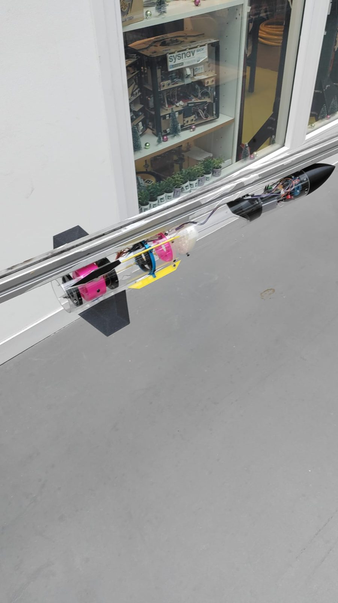
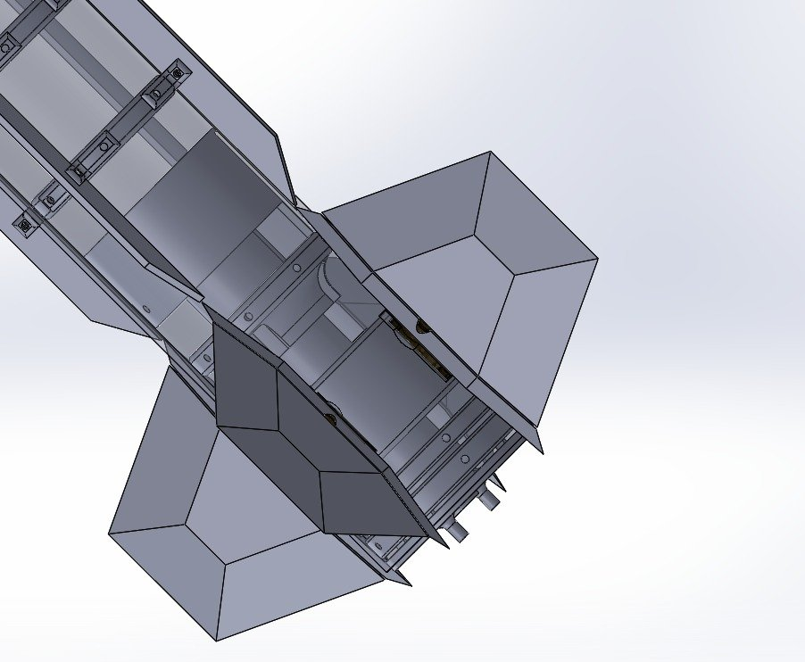
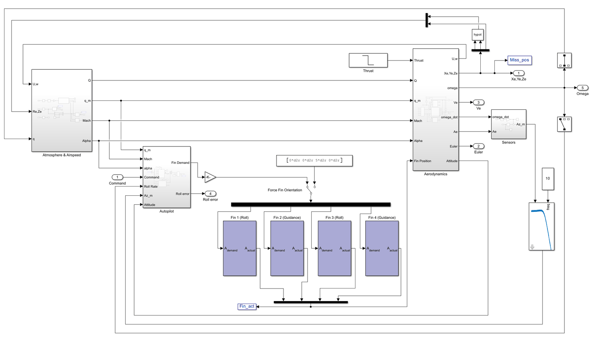

Fin-Controlled Rocket
GNC Lead · Cercle Aérospatial CentraleSupélec · 2025–2026
ARES is a fin-controlled rocket my club built in one semester as a demonstrator. As GNC Lead I designed its guidance and control, and we flew it twice with roll control only. Roll stabilization worked on both flights.

At a glance
- Role
- GNC Lead; I also did the flight electronics
- Team
- Cercle Aérospatial CentraleSupélec
- Dates
- One semester, 2025–2026
- Tools
- Simulink; SolidWorks and OpenRocket models for the rocket parameters
- Outcome
- Flown with roll control only; roll-axis stabilization worked in flight
Scope and constraints
ARES was a single-semester demonstrator on a very small budget, with no competition to target. With so little development time, we set the goal at roll control only. We judged full 3-axis control too risky, so pitch and yaw control were out of scope.
What I did
As GNC Lead, I designed a 6-DoF GNC architecture with Simulink modeling, sensor fusion and PID optimization. I also did the flight electronics.
Results
We flew it twice with roll control only, and roll-axis stabilization worked on both flights. We did not fly pitch or yaw control.
Control design
This is the design work in my report excerpt, in plain terms.
Roll control
Four movable fins with a symmetric profile sit at the propulsion section. A symmetric fin makes no lift at zero angle, so it only produces roll moment when it is deflected. For small angles that moment grows with the deflection, and it also depends on air density, fin area, speed squared and the fin’s lever arm.
The guidance command is simply to hold roll angle and roll rate at zero. A proportional-derivative law turns the roll error into a fin deflection:
fin deflection = kp · roll angle + kd · roll rate
Inserted into the moment equation, this gives a damped oscillator, so the gains follow from the response I asked for: reaching 95% of the command in about 0.5 s with under 5% overshoot. SolidWorks and OpenRocket models supplied the rocket parameters. As a later step, the report proposes a controlled roll of up to 90° and a gradual return to zero.
Planned pitch guidance (design only, not flown)
The design has a second phase for when roll is stable. The rocket switches to proportional navigation, which commands a lateral acceleration in proportion to how fast the line of sight to a target rotates. That command becomes an angle-of-attack command, tracked by a PD law on two of the four fins. The other two stay on roll.
I also wrote a short GNC design note (2025) deriving the guidance law in 3D. With p and v the target's position and velocity relative to the rocket, the line-of-sight rate and the commanded acceleration are:
dλ/dt = (p × v) / ‖p‖² ac = N · v × dλ/dt
N is the navigation gain. The rocket is on a collision course when the line-of-sight rate is zero, so the law steers to drive it to zero. The same note sets out the control side: a PID law on the error between commanded and measured attitude, with gains chosen from a model of the rocket's dynamics.
Simulink model
The model includes the rocket dynamics, the roll and pitch PD laws, and disturbances and command angles to test robustness. Its guidance logic has a mode state machine. When I wrote the excerpt, the model was operational but still being tuned and validated, so I quote no simulation results.
Documents
Control design report (PDF, English excerpt)
An excerpt of the ARES project report, covering my control design work only.
A 12-page paper I wrote on the guidance, navigation and control design of ARES: proportional navigation, sensor fusion, and roll and pitch control design.
Gallery
Photos and CAD of the rocket, plus screenshots of simulations of the full 6-DoF GNC design. Only roll control was flown.






